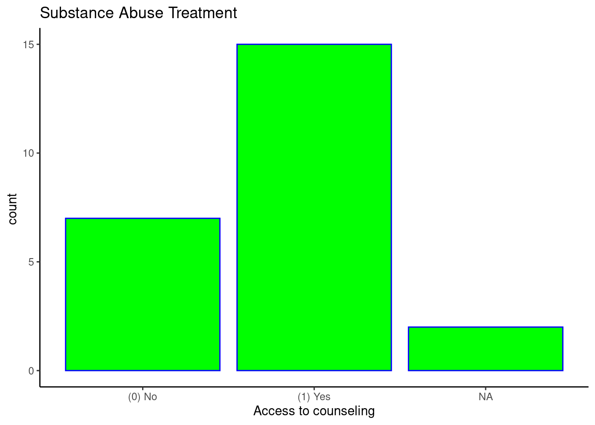
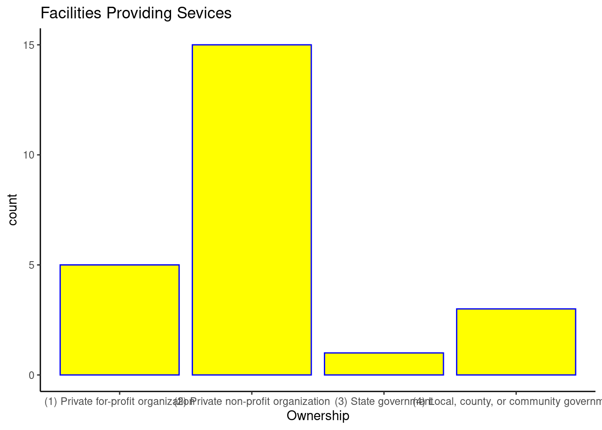

1 + 1[1] 2title: “Data Management” format: html: self-contained: true toc: true pdf: number-sections: true toc: true pdf-engine: xelatex editor: visual —
Quarto enables you to weave together content and executable code into a finished document. To learn more about Quarto see https://quarto.org.
When you click the Render button a document will be generated that includes both content and the output of embedded code. You can embed code like this:
1 + 1[1] 2You can add options to executable code like this
[1] 4library(tidyverse)── Attaching core tidyverse packages ──────────────────────── tidyverse 2.0.0 ──
✔ dplyr 1.1.4 ✔ readr 2.1.5
✔ forcats 1.0.0 ✔ stringr 1.5.1
✔ ggplot2 3.5.1 ✔ tibble 3.2.1
✔ lubridate 1.9.4 ✔ tidyr 1.3.1
✔ purrr 1.0.4
── Conflicts ────────────────────────────────────────── tidyverse_conflicts() ──
✖ dplyr::filter() masks stats::filter()
✖ dplyr::lag() masks stats::lag()
ℹ Use the conflicted package (<http://conflicted.r-lib.org/>) to force all conflicts to become errorslibrary(descr)
library(knitr)
library(dplyr)
library(readr)
library(ggplot2)file.path <- "/cloud/project/Data/Dataset.csv"
Dataset.csv <- read.csv(file.path)
head(Dataset.csv) S.NoSort.column Case.Identification.Number CONTROL..COMPLETES.1.PHONE.2....
1 NA CASEIDSort column MODESort column
2 1 1 (2) Mail
3 2 2 (9) Web
4 3 3 (9) Web
5 4 4 (9) Web
6 5 5 (1) Phone
CENSUS.STATE.FIPS.CODES.LABE.... Added..Census.Region Added..Census.Division
1 STFIPSSort column REGIONSort column DIVISIONSort column
2 (51) VIRGINIA (3) South (5) South Atlantic
3 (6) CALIFORNIA (4) West (9) Pacific
4 (28) MISSISSIPPI (3) South (6) East South Central
5 (36) NEW YORK (1) Northeast (2) Mid-Atlantic
6 (18) INDIANA (2) Midwest (3) East North Central
OFFERED.INTAKE.ASS.MNT.REFER.... Offered.Detox.3.31.03 Offered.SA.Tx.3.31.03
1 OTHNONTXSort column DETOXSort column TREATMTSort column
2 (1) Yes (0) No (1) Yes
3 (1) Yes (0) No (1) Yes
4 (1) Yes (1) Yes (1) Yes
5 (0) No (0) No (1) Yes
6 (1) Yes (0) No (1) Yes
Setting..Halfway.House OFFERED.OTHER.SA.SERVICES.SU....
1 LOC5Sort column ADMINSort column
2 (1) Yes (1) Yes
3 (1) Yes (1) Yes
4 (0) No (0) No
5 (0) No (0) No
6 (0) No (0) No
PRIMARY.FOCUS.SA.TX.MH.MIX.G....
1 FOCUSSort column
2 (1) Substance abuse treatment services
3 (1) Substance abuse treatment services
4 (3) Mix of mental health and substance abuse
5 (1) Substance abuse treatment services
6 (3) Mix of mental health and substance abuse
Ownership Federal.Government.Agency
1 OWNERSHPSort column FEDOWNSort column
2 (2) Private non-profit organization <NA>
3 (2) Private non-profit organization <NA>
4 (1) Private for-profit organization <NA>
5 (4) Local, county, or community government <NA>
6 (2) Private non-profit organization <NA>
Solo.practice AFFILIATED.W..RELIGIOUS.ORGA....
1 LOC15Sort column RELIGSort column
2 (0) No (0) No
3 (0) No (0) No
4 (0) No (0) No
5 <NA> <NA>
6 (0) No (0) No
LOCATED.IN.OPERATED.BY.HOSPI.... Hospital.Type Hotline...yes.no
1 HOSPITALSort column LOCSSort column HOTYNSort column
2 (0) No <NA> (0) No
3 (0) No <NA> (0) No
4 (1) Yes (2) Psychiatric hospital (1) Yes
5 (0) No <NA> (0) No
6 (0) No <NA> (0) No
Assessment.comprehensive.SA Assessment.mental.health
1 SRVC1Sort column SRVC2Sort column
2 (0) No (0) No
3 (1) Yes <NA>
4 (1) Yes (1) Yes
5 (1) Yes <NA>
6 (1) Yes (1) Yes
Therapy.family.counseling Therapy.group
1 SRVC4Sort column SRVC5Sort column
2 (0) No (1) Yes
3 (1) Yes (1) Yes
4 (1) Yes (1) Yes
5 <NA> (1) Yes
6 (1) Yes (1) YesDataset.csv <- Dataset.csv[-c(1,2), ]
#View(Dataset.csv)colnames(Dataset.csv) [1] "S.NoSort.column" "Case.Identification.Number"
[3] "CONTROL..COMPLETES.1.PHONE.2...." "CENSUS.STATE.FIPS.CODES.LABE...."
[5] "Added..Census.Region" "Added..Census.Division"
[7] "OFFERED.INTAKE.ASS.MNT.REFER...." "Offered.Detox.3.31.03"
[9] "Offered.SA.Tx.3.31.03" "Setting..Halfway.House"
[11] "OFFERED.OTHER.SA.SERVICES.SU...." "PRIMARY.FOCUS.SA.TX.MH.MIX.G...."
[13] "Ownership" "Federal.Government.Agency"
[15] "Solo.practice" "AFFILIATED.W..RELIGIOUS.ORGA...."
[17] "LOCATED.IN.OPERATED.BY.HOSPI...." "Hospital.Type"
[19] "Hotline...yes.no" "Assessment.comprehensive.SA"
[21] "Assessment.mental.health" "Therapy.family.counseling"
[23] "Therapy.group" I choose this variable of Ownership, because I think it will be important to understand what kind of facilities are available for treatment, to different communities such as low income and wealthy communities.
freq(as.ordered(Dataset.csv$Ownership), plot = FALSE)as.ordered(Dataset.csv$Ownership)
Frequency Percent Cum Percent
(1) Private for-profit organization 5 20.833 20.83
(2) Private non-profit organization 15 62.500 83.33
(3) State government 1 4.167 87.50
(4) Local, county, or community government 3 12.500 100.00
Total 24 100.000 #What type of facilities are available for substance abuse disorder?This variable will also play an important role, because addicts who are in recovery need the support of family and society, so is important to know about the services that facilities will provide not only to the patient but to his or her love one in order to support the sobriety.
freq(as.ordered(Dataset.csv$Therapy.family.counseling), plot= FALSE)as.ordered(Dataset.csv$Therapy.family.counseling)
Frequency Percent Valid Percent Cum Percent
(0) No 7 29.167 31.82 31.82
(1) Yes 15 62.500 68.18 100.00
NA's 2 8.333
Total 24 100.000 100.00 This variable took my attention because there is many places that only might take patients with substance disorder only by reference but is this a barrier for treatment. Also is there more people reaching for help by them selves or because they were referred? I think this will be very interesting to explore
freq(as.ordered(Dataset.csv$OFFERED.INTAKE.ASS.MNT.REFER....), plot = FALSE)as.ordered(Dataset.csv$OFFERED.INTAKE.ASS.MNT.REFER....)
Frequency Percent Cum Percent
(0) No 3 12.5 12.5
(1) Yes 21 87.5 100.0
Total 24 100.0 freq(as.ordered(Dataset.csv$Therapy.family.counseling), plot = FALSE)as.ordered(Dataset.csv$Therapy.family.counseling)
Frequency Percent Valid Percent Cum Percent
(0) No 7 29.167 31.82 31.82
(1) Yes 15 62.500 68.18 100.00
NA's 2 8.333
Total 24 100.000 100.00 Won;t be using this but it was created as an example for the assignment required on pdf
Dataset.csv$THERAPY <-factor(ifelse((Dataset.csv$Therapy.family.counseling ==1 | Dataset.csv$Therapy.group ==1),"Yes","No"))
summary(Dataset.csv$THERAPY) No NA's
22 2 Univariate Graphs
When it comes to substance abuse, what is the access that facilities provide for counseling not only for the client but also for family members?
Dataset.csv %>%
ggplot(aes(x=Therapy.family.counseling)) + geom_bar(fill = "green", color = "blue") + ggtitle("Substance Abuse Treatment") + xlab("Access to counseling") + ylab("count ") + theme_classic()
What time of organizations provide facilities for Substance abuse rehabilitation?
Dataset.csv %>%
ggplot(aes(x=Ownership)) +
geom_bar(fill= "Yellow" , color = "Blue") +
ggtitle("Facilities Providing Sevices") +
xlab("Ownership") +
ylab("count") +
theme_classic()